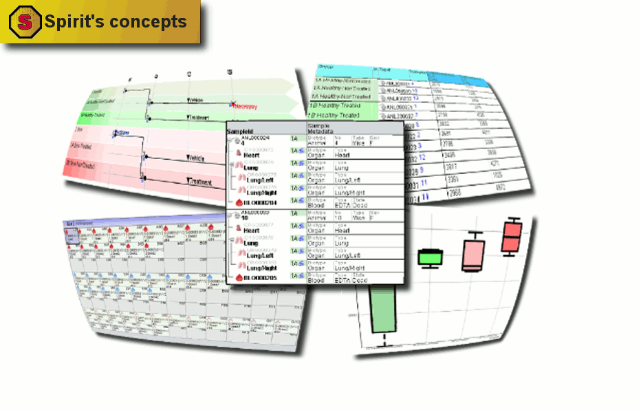
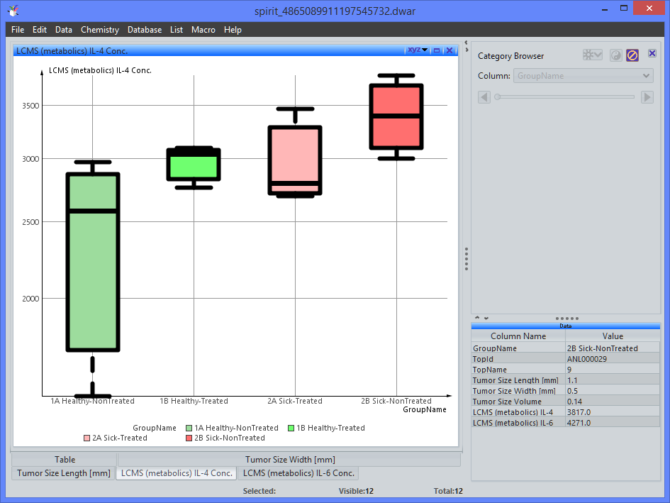
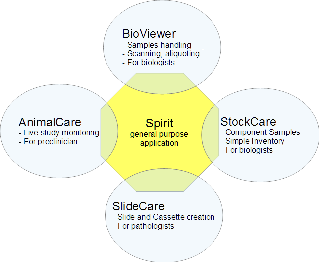

What is SPIRIT?
{kind=link}
SPIRIT is a Java-based software to handle complex life science research data. It was originally developed for internal use by Actelion Pharmaceuticals Ltd. (Switzerland).
SPIRIT is used by more than hundred researchers in Actelion's Drug Discovery Departments. It is also used by the Actelion Research Biobank to manage its preclinical and clinical samples and data.
SPIRIT's data concept is generic and sample-centric. It can be configured to handle any type of samples and their relationships, including animals or humans. Results can be linked to samples and have an unlimited number of input and output parameters. Physical storage locations are managed by a fully configurable inventory system. Finally, a graphical study editor allows to plan, display, and record the progress of experiments involving groups of samples and results over time.
User perspectives
SPIRIT presents four perspectives to the user. Each perspective has its own tab in the
main program window, but they are all linked. In these tabs, the user can do the following:
Studies
Graphically design and monitor the evolution of a study (experiment).
Studies consist of the following elements:
Biosamples
Create samples, find and display them as well as all related samples,
edit sample information, print labels
Locations
Scan and register the location of samples, check-in, check-out and relocate them, display inventory lists, print container labels
Results
Store results, find and display them in pivoted tables, export results
in spreadsheet format, visualize them in the DataWarrior software

{kind=link}
{kind=link}
{kind=link}
{kind=link}
{kind=link}
Database
Spirit can be configured as a client only software with an embedded database or it can be configured as a client-server application with an external database
{kind=link}
{kind=link}
For production, it is recommended to use a the client/server installation used for production, with an Oracle or MySQL database, with a proper backup procedure.
In the client/server mode, Spirit comes with its own user database. User's rights can be configured by groups and/or roles.
The first time SPIRIT is started (and otherwise configured), Spirit runs in the Demo version. The database structure is inialized, and some predefined biotypes/tests are updated. The system is design to scale with the future major updates, through a built-in migration procedure.
Configuration
Each instance of Spririt requires the definition of biotypes (such as animals, blood, organs, DNA, cells) with their metadata, storage locations (such as buildings, labs) and tests to store results.
SPIRIT also requires the registration of users. Users may be part of a group with specific rights, or be assigned to a customized role (such as admin, readall, QA). SPIRIT is delivered with its own user database or it can be customized to connect to an existing system
Satelite applications
SPIRIT links directly with Actelion's DataWarrior software to filter and display complex, multidimensional data. DataWarrior is available for free from www.openmolecules.org.
{kind=link}
The main SPIRIT software is accompanied by a suite of applications built to support specific users in dedicated tasks:
- AnimalCare:
- Monitoring of animal studies (randomization, weighing, measuring, labeling)
- StockCare:
- Sample Inventory for cells, antibodies, etc.
- SlideCare:
- Generation of paraffin blocks and microscopy slides
- BioViewer:
- Simple sample information viewer with basic functionality (scanning, aliquoting)
At Actelion, SPIRIT also integrates seamlessly with the company's "Niobe" Electronic Lab Notebook (ELN) software, the "ORBIT" raw data file management system, and the "ORBIT Image Analysis" software.
Collaboration
SPIRIT is designed to provide many users a unified environment to manage their data, to collaborate, and to share their results. This is achieved by maintaining a single, system-wide configuration. Although users and groups have restricted rights, SPIRIT was not designed to completely isolate users from each other.
The latter could, in principle, be achieved through independent SPIRIT implementations. This will inevitably lead to diverging configurations, at the expense of data interchangeability.
Audit trail, backup, data recovery
Every modification in the SPIRIT database is recorded (time stamp, user, change). For each entity, a revision history can be displayed. Audits can be displayed per date or per user. Rollbacks to previous state are possible.
The database that SPIRIT connects with must be backed up, but no further backups are required.
Although SPIRIT stores its data in a relational database, it is possible to export its complete content in a (potentially huge) flat spreadsheet file at once.
SPIRIT can also import/export to its own exchange format, so data can be exchanged/merged between different instances of SPIRIT, in different organizations. If the settings are differents (missing or other biotypes/tests), an entity mapping can be configured.
Hardware integration
SPIRIT specifically supports this peripheral hardware:
- Brother P-Touch label printers
- Barcode readers
- FluidX rack scanner
- Mettler-Toledo balances
Current implementations
- Actelion Pharmaceuticals Ltd., Allschwil, Switzerland. Drug Discovery Departments, including Actelion Research Biobank
- University Hospital Basel, Switzerland. Departement Biomedicine
Thanks to Oliver Peter for the first version of the PDF document